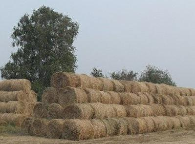

Продажа сена
Наше крестьянское хозяйство занимается заготовкой и продажей сена в рулонах. Купить сено можно в п. Карево Доволенского района Новосибирской области. Масса одного рулона 500-700 кг, зависит от состава. Погрузка сена полностью бесплатна и производится в любое удобное для вас время.
Мы также можем помочь вам в заготовке сена на вашей территории. Чаще всего оказываем услуги по прессованию сена заказчика в рулоны, но выполняем и любые другие работы.
Схему проезда и информацию для связи можно посмотреть в разделе контактов.
Несколько причин купить сено именно у нас:
- Продажа сена — не основное наше занятие, мы также разводим КРС и овец, поэтому все сено заготавливается «как для себя». У нас вы купите только качественное сено!
- Вы сможете самостоятельно выбрать понравившиеся рулоны, не придется покупать кота в мешке. Приезжайте! Все покажем и расскажем.
- Более 20 лет опыта работы в сельском хозяйстве позволяют достичь высоких показателей качества продукции.
- Мы самостоятельно заготавливаем и продаем сено, это позволяет убрать посредников между производителем и покупателем и поддерживать всегда низкие цены.
- Удаленность от крупных городов и транспортных магистралей в сочетании с наличием естественных луговых трав делают наше сено по настоящему экологически чистым.
- Если у вас нет возможности самостоятельно забрать сено, мы сможем помочь. Организуем доставку в удобное для вас время. Просто позвоните и мы все подробно расскажем!
- Для оптовых покупателей действует система скидок!